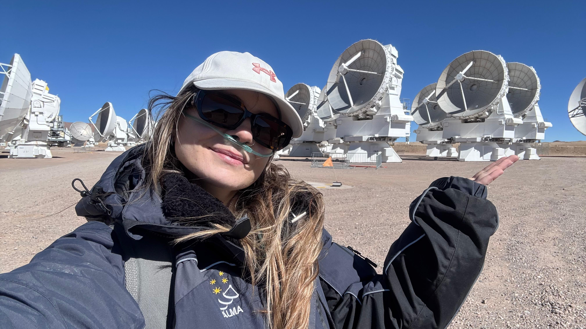

About me.

Hi, I am Lydia Konstantinou and I come from Greece. I am an observational astronomer studying the evolution of low-mass stars and their role as the chemical factories of galaxies. I am a third year PhD candidate at the National Observatory of Athens in Greece and currently an ESO student based in Chile. My research focuses on understanding the lifecycle of low mass stars with a main focus on the planetary nebulae (PNe) phase. I study PNe not only for their interesting undersling physics but also for their role in galaxies evolution. My background includes spectroscopy and integral field spectroscopy in optical and near-infrared using X-Shooter, MUSE and ERIS data.
Outside work, I enjoy dancing, handcrafting bags, running, roller skating, traveling, and hiking.
I speak greek, english, and un poco de español.
See my workAFFILIATIONS
Let’s connect
I’d be happy to chat about research, exchange ideas, or discuss opportunities to collaborate. Feel free to get in touch!
Say hello